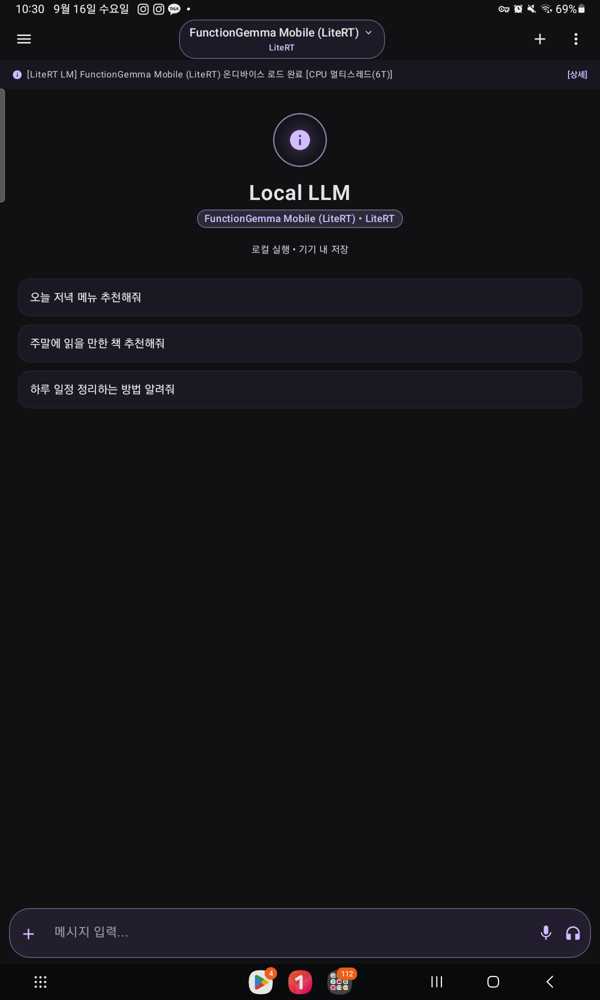
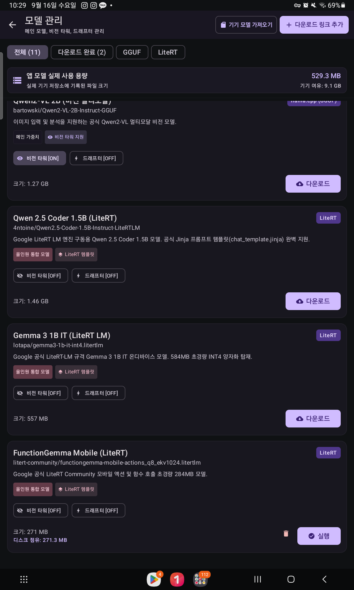
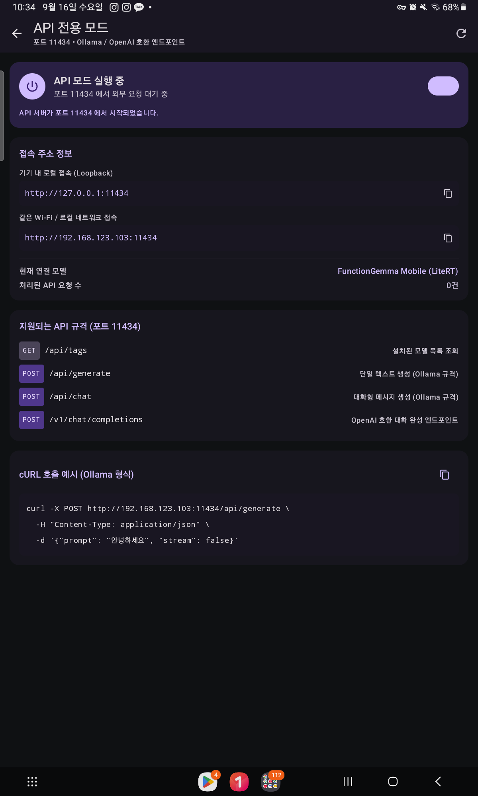
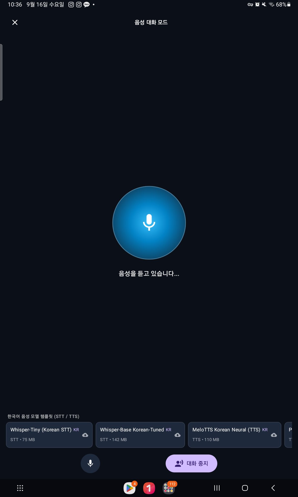

A privacy-first, fully offline on-device LLM chat and server for Android. Run state-of-the-art models directly on your CPU, GPU and NPU - no cloud, no API keys, no telemetry. Custom glass UI, instant English/Korean switching, tool use via a native MCP client, and an experimental first-party MoE engine built in the open.




Most "local LLM" apps give you one engine. Local LLM Android runs two, behind one interface.
Chats are AES-256-GCM encrypted with keys generated in the Android Keystore (TEE / Secure Element). No silent fallbacks.
Port 11434 server on-device. Loopback-only by default, optional LAN binding with bearer-token auth. Drop-in for your existing tools.
Token-level prompt speed and generation speed (tokens/s) measured via native tokenizers, shown on every message.
Hands-free loop: on-device Whisper speech-to-text, LLM generation, text-to-speech. Animated voice orb, zero cloud round-trips.
DeepSeek-R1 style think tags are parsed reliably even when split across streaming chunks.
Native Model Context Protocol client with per-session isolation guards, bringing tool use into on-device chats.
Material3 stripped out. A custom glass design system covers every screen, with instant English/Korean switching built in.
Available RAM is checked before model load to prevent native crashes. Downloads pause/resume with integrity checks.
A first-party MoE-only inference core, built in the open as the :engine module. GGUF reader, BPE tokenizer, paged expert streaming, C++ JNI core (NDK). Numerical validation running on real Qwen3-30B-A3B weights. Experimental - not for production yet. Dense engines (llama.cpp / LiteRT-LM) remain the production path.
Apache-2.0 licensed. Clone, build, ship.
git clone https://github.com/zmxnpquryet-gif/Localllmandroid.git ./gradlew assembleDebug # build ./gradlew testDebugUnitTest # test